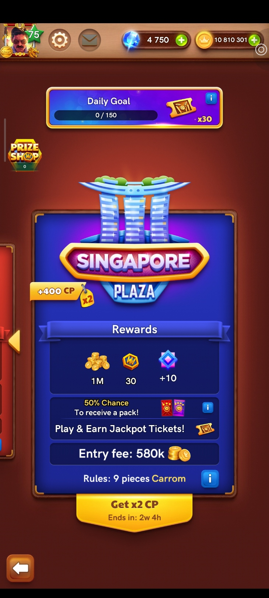
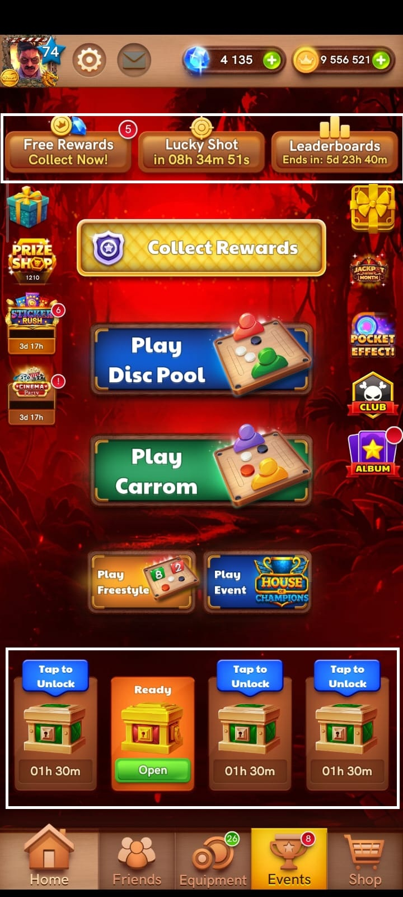
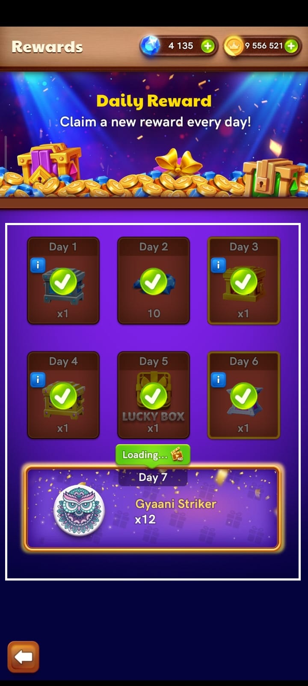
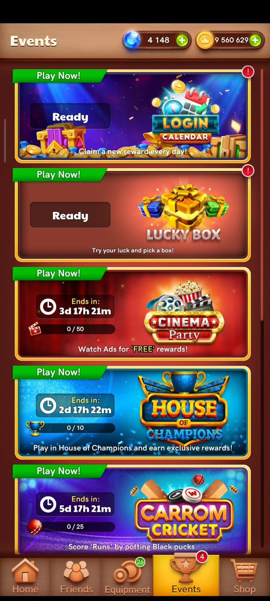
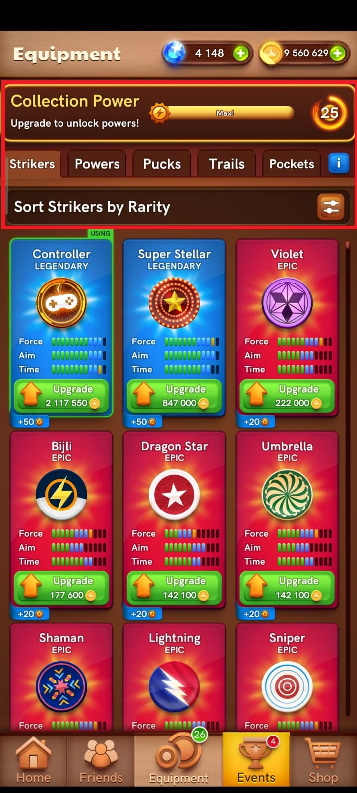
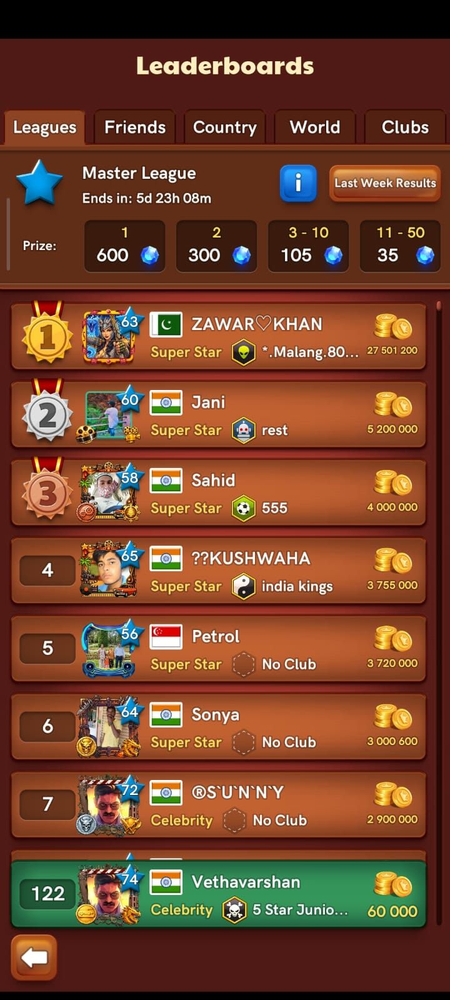
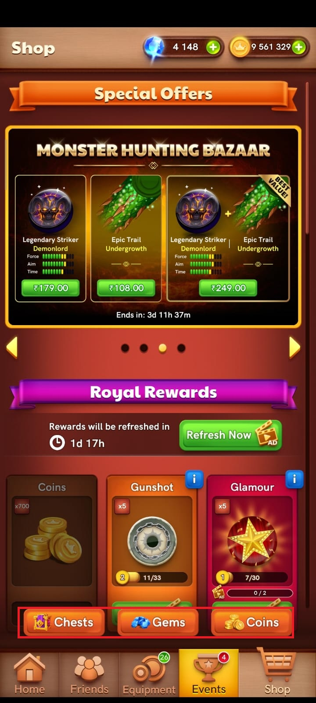

BREAKDOWN 01 / MOBILE
CARROM POOL
META PROGRESSION
A systems-focused breakdown of how a short competitive match connects to rewards, progression, collection, competition and long-term return motivation.
MOBILESYSTEMS DESIGNPLAYER PSYCHOLOGYECONOMYRETENTION

01 / MARKET CONTEXT
WHY THIS GAME
IS INTERESTING
The market layer explains why Carrom Pool is useful as a systems-design study: a familiar board-game activity is surrounded by multiple progression and monetization layers.
SOURCE NOTE
The revenue/download figures above are the estimates supplied for this portfolio breakdown and are not presented as verified audited financial results.
OPEN SENSOR TOWER ↗
02 / DESIGN QUESTION
HOW DOES A MATCH
CREATE A RETURN?
A match can be short. The progression system is not. The interesting design problem is how the game turns one completed match into reasons for another action later.
MOMENT-TO-MOMENT LOOPMATCH → PLAY → WIN / LOSE → REWARD → NEXT MATCH
→
META LOOPMATCH → EARN → UNLOCK / UPGRADE → PROGRESS → NEW GOAL → RETURN
03 / META PROGRESSION
ONE MATCH.
MANY HORIZONS.
Different systems target different commitment windows, so the player is rarely left with only one reason to continue.
MATCH→REWARD→META PROGRESS→NEW GOAL→RETURN
CHESTSDAILY REWARDSEVENTSCOLLECTIONLEADERBOARDSECONOMY

01
TIMED CHESTS
Observation: reward containers move through locked and ready states using timers.
Player effect: a reward creates a future appointment even when there is no immediate match.
Design takeaway: rewards can extend the loop beyond the session.

02
DAILY REWARDS
Observation: a multi-day reward sequence creates a recurring return target.
Player effect: the player has a small, predictable commitment for the day.
Design takeaway: cadence can create routine without changing the core match.

03
EVENTS
Observation: temporary activities stack additional objectives above the base match.
Player effect: the next session can have a different purpose.
Design takeaway: short-term goals reduce perceived repetition.

04
COLLECTION / UPGRADES
Observation: rewards feed a persistent collection and upgrade layer.
Player effect: a match can contribute to identity and long-term progress.
Design takeaway: meta rewards are stronger when they feed another system.

05
LEADERBOARDS
Observation: ranks, tiers, countdowns and reward brackets create competitive goals.
Player effect: a single match becomes meaningful inside a larger competitive journey.
Design takeaway: competition adds a longer time horizon to repeated play.

06
ECONOMY
Observation: currency, entry costs, shops and sinks appear across the player journey.
Player effect: match outcomes have consequences for future access and spending.
Design takeaway: an economy can connect otherwise separate systems.
04 / PLAYER PSYCHOLOGY
DIFFERENT
REASONS TO PLAY
The design spreads motivation across multiple time horizons instead of asking the player to care only about the next match.
WIN THE MATCH
Immediate competence, competition and outcome.
CLAIM THE REWARD
A near-term reason to return to the game state.
COMPLETE AN EVENT
A temporary objective creates urgency and variety.
RANK / COLLECT / UPGRADE
Persistent goals create reasons to invest across many sessions.
RETENTION MODEL
MATCH↓REWARD↓PROGRESS↓NEW GOAL↓RETURN
Retention insight: the core match provides immediate entertainment; the meta layer creates reasons to return outside the match itself.
CARROM-SPECIFIC D1TO ADDUse only a verified cohort/source value here.
CARROM-SPECIFIC D7TO ADDUse only a verified cohort/source value here.
CARROM-SPECIFIC D30TO ADDUse only a verified cohort/source value here.
05 / ECONOMY
FROM MATCH
TO VALUE
The economy gives match outcomes persistence. Rewards are useful when they become inputs to future actions rather than dead-end numbers.
INPUTPLAY / ENTRY
→
OUTPUTREWARD / CURRENCY
→
SINKSHOP / UPGRADE / ACCESS
→
NEW TARGETPROGRESS / COMPETE
A useful economy turns “I played” into “I changed my future state.”
06 / DESIGN TAKEAWAYS
WHAT I TAKE
FROM THE BREAKDOWN
The goal is not to copy the system. It is to understand why the system creates layered motivation.
CORE LOOP ≠ RETENTION LOOP
A strong match can provide the fun; meta systems extend the player's reason to continue.
GOAL HORIZONS MATTER
Immediate, daily, weekly and long-term goals can coexist without changing the base interaction.
REWARDS SHOULD FEED SYSTEMS
A reward becomes more meaningful when it unlocks another decision, collection or progression path.
ECONOMY IS A CONNECTOR
Currency and sinks can connect match results to future actions across the player journey.
RESEARCH NOTE
OBSERVATION
OVER ASSUMPTION.
This breakdown uses the supplied Carrom Pool screenshots and the revenue/download figures supplied for this portfolio. Exact D1/D7/D30 retention values should be added only when you provide a verified source/value.
Source link: Sensor Tower — Carrom Pool (India)